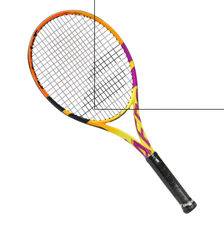

História do Tênis
Antes de ser jogado com raquetes, o tênis tem suas origens em modalidades disputadas na Antiguidade apenas com a palma das mãos. Há registros de jogos disputados apenas com uma bola e as mãos desde o Egito Antigo até a Europa do século 5. Uma versão mais parecida com o tênis moderno surgiu no século 12, na Itália e na França, onde monges praticavam algo similar em pátios fechados, delimitando o espaço de jogo.
Até chegar às regras e às delimitações de quadra que possui hoje, o tênis passou por muitas mudanças. Adotado pelos aristocratas europeus, passou a dividir espaço com outra modalidade bastante praticada à época: o croquet. Tanto que um tradicional clube britânico, o All England Croquet, passou a ser chamado de All England Lawn Tennis and Croquet Club, onde até hoje é realizado o Torneio de Wimbledon.
Foi questão de tempo para a criação de entidades nacionais e da federação internacional. Com regras definidas, o primeiro torneio foi realizado em 1877, na Inglaterra. O primeiro jogador a dominar o circuito foi o britânico W. Ravenshaw, responsável por introduzir a técnica do voleio. Campeão pela primeira vez em 1881, ele colecionou troféus por sete anos.Ler mais
Jogadores de Tênis
- Novak Djokovic
- Carlos Alcaraz
- Daniil Medvedev
- Jannik Sinner
Produtos
- 